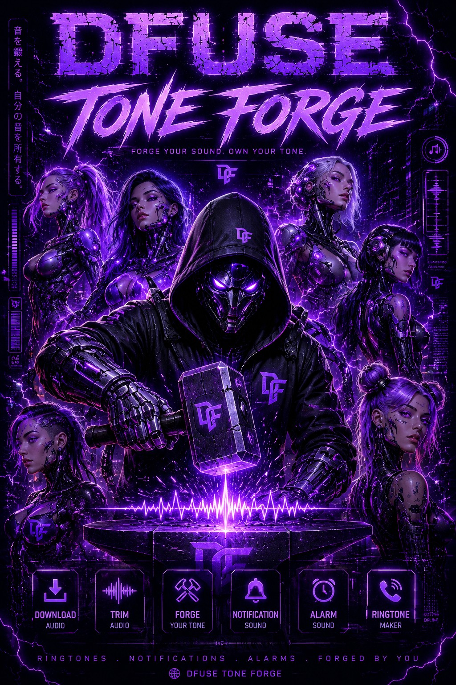

Turn audio you own or have permission to use into custom ringtones, notifications, and alarm sounds with a customizable Android editor.
Android 8.0 or newer. Download the APK and allow installation from your browser when prompted.
Release notes
Paste a link and pull audio into the forge.
See a continuous waveform, zoom up to 16×, scroll through the track and adjust your trim in 0.1-second steps.
Preview your selected clip before exporting. Keep the exact section you want.
Save your clip and choose Set as default now to apply your notification sound directly.
Export an alarm sound and apply it as the system default. Existing alarms with custom sounds keep their settings.
Save to your public Ringtones folder and apply the default ringtone from Tone Forge.
Choose Purple, Teal, Ember, Blue, or White themes and saved editing preferences.
Choose M4A/AAC quality at 96, 192, or 256 kbps and fade in or out. Loop previews and start new tracks with a 5, 15, or 30-second selection.
Waveforms build progressively with lighter sample analysis. Completed waveforms are cached for reopening, and Settings lets you clear that cache.
The new editor and default notification setting have been tested on Motorola. Samsung support uses Android’s standard sound APIs; Samsung device testing is pending. Individual app notifications and SIM ringtones may use separate settings.
DFUSE Tone Forge is built for personal audio, original content, or media you have permission to use.